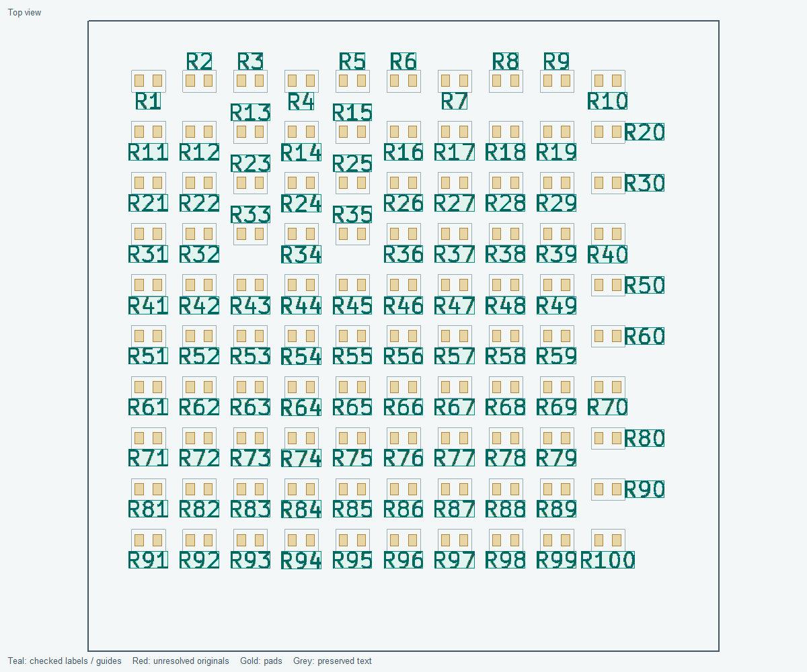

Earlier window layout

This historical capture predates the current controls/defaults.
Arrange readable references beside their own components on both PCB faces. Preview first, review exceptions, then apply. Electrical values, BoM metadata, component positions and routing stay unchanged.

This preview raster uses actual drawing code on a disposable synthetic fixture. It is not a desktop screenshot or evidence that every irregular board can be resolved.
Preserve acceptable references first. Try footprint-axis alignment, then perpendicular alignment, bounded size/width changes and staggered edge slots. Common direction is an optional horizontal-first preference. Allowed rotations and reading direction remain binding. Target the first 2 mm outside the courtyard; centre labels within the corridor projected from its edge. Wide text may spill beyond a short edge's projected corner lines if centred and clear. The alignment margin initially permits 0.5 mm centre offset.
Remaining references receive a deeper retry and bounded local repacking. Every affected neighbour must fit before a trial is kept. Farther alternatives prioritize shortest distance. Printed leaders are off by default, straight and exceptional when enabled. No multi-bend callout networks are generated. Results explain candidates rejected by guide count or length limits; these are user-adjustable bounds, not proof of physical impossibility. Every accepted label needs a direct association that avoids other courtyards, text and accepted associations. Virtual associations may cross decorative silk; printed leaders must clear it.

This regular example places 100 references without guides; it does not establish dense-board completeness.
| Control | Initial setting |
|---|---|
| Preserve acceptable placements | On; problem-only mode excludes these labels from repacking |
| Normal / maximum search distance | 2 / 12 mm outside the footprint envelope |
| Preferred / minimum height | 1.0 / 0.8 mm, subject to stricter native board floors |
| Minimum width / width-height ratio | 0.6 mm / 0.75 |
| Local repacking | 6 neighbours, up to 2 mm displacement each; scope configurable up to 12 |
| Leaders | Off; if enabled, initially at most 10, maximum length 3 mm, straight only |
Automatic sizing is per label, with up to 16 heights. Existing smaller text is not enlarged unless a fabrication floor requires it. Disabling automatic sizing preserves existing larger text. Choose allowed horizontal, vertical, 45-degree and other angles (up to 36 total), plus reading direction viewed from the label's board face. Apply preserves the reviewed rotation by disabling Keep upright; Undo restores it.

Formatting rules can match reference, value and label-text wildcards. First match wins; comma-separated patterns are alternatives and filled criteria must all match. Editable presets suggest TP knockout, programming-header bold and input-connector italic. They do not classify connectors automatically. Knockout's complete native filled envelope is checked. Unresolved labels retain their original styles.

Native glyph envelopes, including stroke/knockout, stay outside same-side courtyards, pads, mask openings, other silk and the closed board outline with cutouts. Incomplete courtyards reserve their drawn extents. Missing courtyards use a conservative footprint hull; fabrication graphics protect body extents outside undersized courtyards. These are 2D proxies, not verified physical package models. Conservative rectangles can miss feasible glyph-level slots. Apply verifies actual rendered bounds and rolls back if they exceed the preview.
Reports separate exact native glyph-to-courtyard gap, conservative envelope gap and native 2D hull-proxy gap. Missing courtyard geometry means unknown, not an invented distance. Tented vias follow native per-face mask settings and require intact manufacture. The optional drilled-hole protection also reserves tented drills; blind/buried vias block only faces they reach.

New managed annotations persist footprint/text/leader UUIDs and settings in board properties. Updates and verified old-guide removal form one reversible operation. Generated objects audits managed, orphaned, duplicate and uncertain records. Explicit confirmed cleanup removes only verified generated leaders and retains text. Uncertain legacy or manual artwork is reported for review, never deleted solely because of its name. Stale state blocks cleanup. Verified guides detached from current text or their intended footprint are reported explicitly; their proven ownership permits confirmed cleanup.
Legacy strokes left after label moves and a separate custom callout-generation step were distinct problems. The latter must not be attributed to the released plugin as proof that it creates callout mazes.
Enable Use connected net names for test point labels and review the TP* pattern. Exactly one connected net is required. A separate managed silk annotation uses the complete net name while retaining the true component reference/BoM identity and suppressing only its display. Missing or multiple nets remain unchanged. Disable the mode and Preview/Apply to restore the reference and remove the annotation. One-net connectors can be explicitly included by pattern. Automatic wrapping and per-pin multi-net connector labels are not implemented.

wayricad-silkscreen settings wayricad-silkscreen preview C:/Projects/Example/board.kicad_pcb --references-only --problems-only --output labels.json --report labels.html wayricad-silkscreen preview C:/Projects/Example/board.kicad_pcb --refs U1 TP1 --settings silk.json --output selection.json wayricad-silkscreen audit-generated C:/Projects/Example/board.kicad_pcb
Use separate new output files. Settings JSON uses the names printed by settings; the native worker timeout defaults to 1,800 seconds (--timeout overrides it). Saved PCB, project and rule-file hashes are checked. JSON covers every eligible outcome; HTML adds before/after top/bottom previews and distance tables. Native DRC is explicitly NOT RUN; run it separately. CLI never applies or saves PCB changes.
The optional adapter exposes planner settings, saved-board preview and generated-object audit. It has no apply, save or cleanup operation. Install the official MCP Python SDK in the server's Python environment and launch it with a required allowed project root:
python -m pip install "mcp>=2,<3" python -m silkscreen_label_plugin.mcp_server --project-root C:/Projects/Example --timeout 1800
The selected PCB and any .kicad_pro/.kicad_dru companions must resolve inside that root. Preview settings use the CLI JSON names. KiCad native Python is required for board preview and audit. MCP is optional; its absence does not affect the PCM plugin or CLI. Verified with official SDK 2.3.0 on Windows/Python 3.14: stdio handshake, tool listing, settings, native six-part synthetic preview/audit and out-of-root rejection passed with an unchanged source hash. Live-editor MCP operation was not tested.
Every eligible label is attempted, but finite search does not guarantee all can fit. Repeated-circuit pattern reuse, automatic wrapping and separate user-defined protected regions are not implemented. Hidden/locked labels and locked parts remain untouched. Apply preserves underlying electrical fields and board geometry. This window owns its undo history; ordinary PCB Editor Undo is not claimed, and closing discards that history. Persistent ownership survives saving.
Install the independent PCM ZIP through Plugin and Content Manager, restart PCB Editor and open its toolbar/menu action. KiCad 10 native Python is required. Windows KiCad 10 is the tested target; Linux/macOS GUI and KiCad 11 require validation. Native DRC, fabrication and physical assembly review remain necessary.


This historical capture predates the current controls/defaults.
Full workflow and source references: plugin README. Public reference-board study.